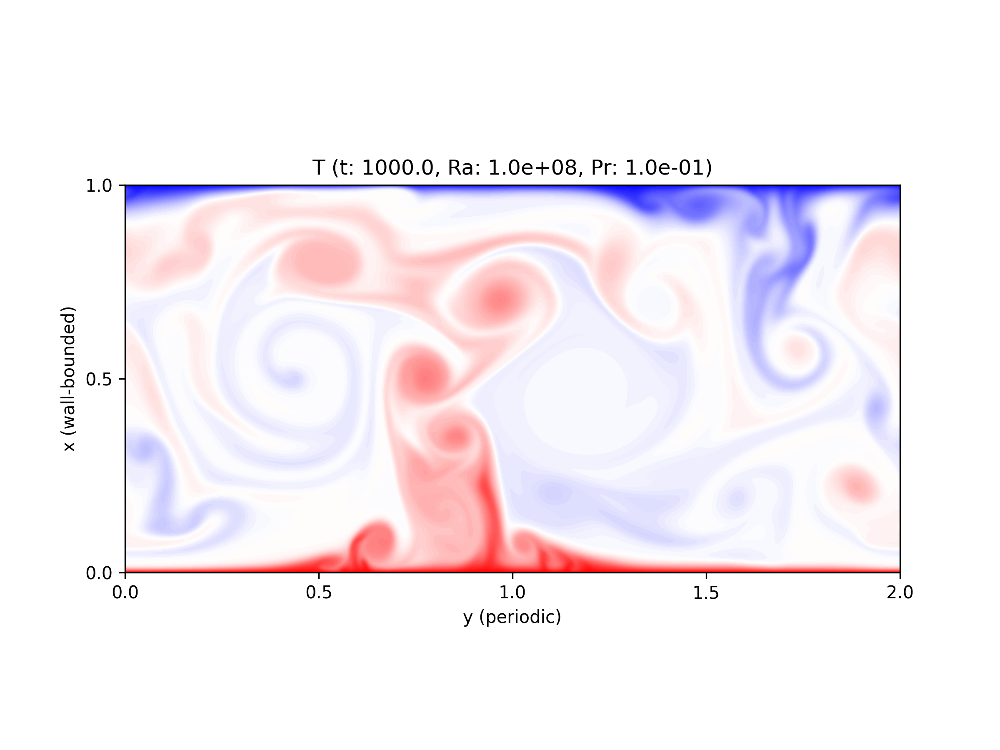
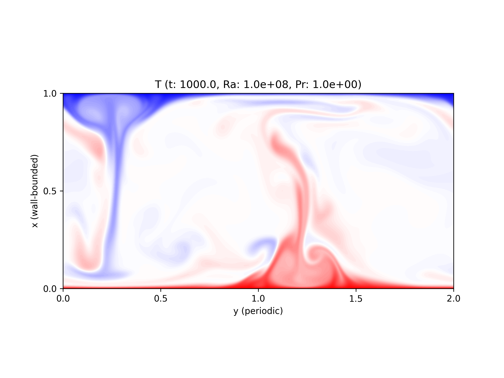

Case 4 - Turbulent statistics¶
Configuration¶
\(500\) time units to get rid of the initial condition effects
\(500\) time units (\(t = 500\) to \(1000\)) to collect statistics
Aspect ratio \(\Gamma \equiv l_y / l_x = 2\)
Rayleigh number \(Ra = 10^8\)
Three Prandtl numbers are considered, \(Pr = 10^{-1}, 10^0, 10^1\)
The other conditions can be found here (\(Pr = 10^0\)):
with_temperature=true \
with_thermal_forcing=true \
timemax=1.0e+3 \
wtimemax=7.1e+3 \
log_rate=1.0e+0 \
log_after=0.0e+0 \
save_rate=1.0e+2 \
save_after=5.0e+2 \
stat_rate=1.0e+0 \
stat_after=5.0e+2 \
ly=2.0e+0 \
itot=512 \
jtot=1024 \
stretch=3 \
Ra=1.0e+8 \
Pr=1.0e+0 \
mpirun -n 4 ./a.out
Note
Spatial resolution is fixed to the above values, which over-resolves high Prandtl cases.
Visualisations¶
Temperature fields at \(t = 1000\) are visualised.
\(Pr = 10^{-1}\):
{kind=link}
\(Pr = 10^{ 0}\):
{kind=link}
\(Pr = 10^{ 1}\):

Nusselt numbers¶
Note
Reference results (data in blue) come from van der Poel et al., J. Fluid Mech. (736), 2013, table 2.
\(Nu\) (data in red) is computed based on the heat flux on the walls.
Statistics¶
In the following figures, different colours are used to distinguish Prandtl numbers.
Mean¶
Mean temperature profile leads
Points denote 5 computational grids in the vicinity of the wall.
Note that the wall-normal coordinate is normalised by the thermal boundary layer thicknesses
Variance¶
Fluctuations are as follows.
Temperature \(T^{\prime}\):
Wall-normal velocity \(\ux^{\prime}\):
Stream-wise velocity \(\uy^{\prime}\):